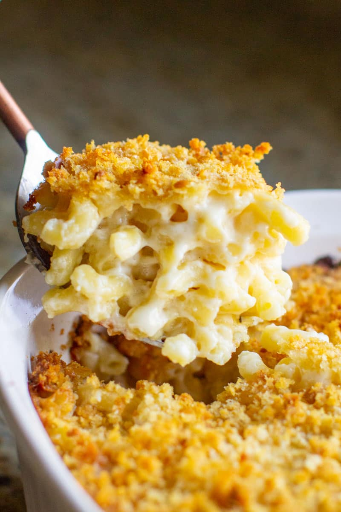

MAC n CHEESE

Description
Mac & Cheese is a crowd favorite and there are many ways to make it. The way I propose is through a thick roux and baking more cheese in between layers of the shells covered in rich sauce. We don't skimp on butter or love here
Ingredients
Fresh Cracked Black Pepper
Steps
- Pre-head oven to 350 degrees F and butter a larger casserole dish.
- Cook noodles just shy of al dente. Drain well and do not rinse.
- In a new pot, melt the butter until foaming, slowly whisk in flower until bubbling.
- Whisk in milk, seasonings, and bring to boil. Remove from head and stir in half of combined shredded cheeses until melted.
- Add in noodles until combined, season with salt to desired taste. Pour into casserole dish. Layer with remaining cheese on top.
- Bake 25- 30 min. Broil for 2 min until crust forms.